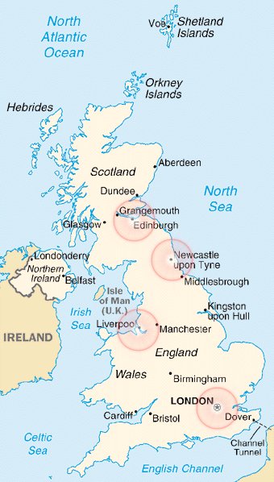

|
We focused on what we considered to be the most representative points of the UK landscape. Of course, we might have been wrong. Comments, suggestion, and inflamatory letters are welcome at maihai@cs.wisc.edu. We will consider your opinion for our next trip :-) Take a look at the map below to see the major stops we made in UK. Select a location to find more.  |
LondonWe spent about 3 days in London, and we did not waste any time, from the very moment we got off the plane. Our friend Mike picked us up from the airport (from Heathrow Internation Airport), where we flew in from Los Angeles. Needless to say, we were dead tired after a long intercontinental flight. Mike, though, had other plans. As soon as we booked in some hotel, he took us on a sleep-walking tour of London. As a result, memories from the days spent in London are very fuzzy. |